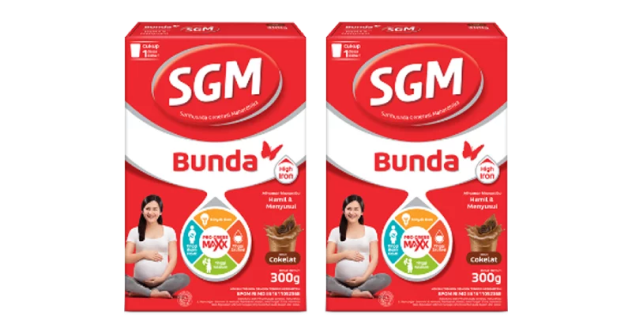
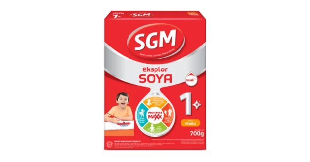
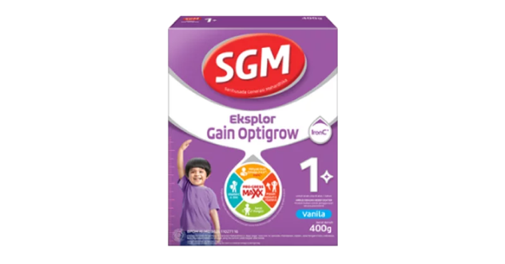
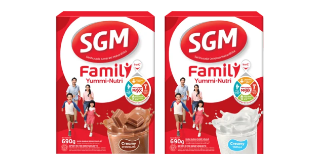

PRODUK

SGM EKSPLOR PRO-GRESS MAXX
Dengan pengalaman lebih dari 65 tahun, SGM Eksplor telah membantu pemenuhan kebutuhan gizi anak di Indonesia, didukung oleh ahli dari Pusat Penelitian Sarihusada. SGM Eksplor Pro-gress Maxx dengan IronC, kombinasi unik Zat Besi & Vitamin C, dilengkapi dengan DHA, Minyak Ikan, Omega 3&6 serta nutrisi penting lainnya, diluncurkan untuk bantu dukung si Kecil tumbuh maksimal menjadi Generasi Maju.
SGM BUNDA
Berbekal lebih dari 60 tahun pengalaman dalam menyediakan produk nutrisi bagi ibu dan anak-anak Indonesia, diperlukan sebuah produk khusus untuk Bunda yang sedang dalam masa kehamilan dan menyusui. Untuk itu, SGM Bunda Pro-gress Maxx hadir dengan Tinggi Zat Besi dan diperkaya nutrisi penting lainnya seperti Minyak Ikan, Tinggi Asam Folat, Tinggi Kalsium & Sumber Vitamin D. Cukup 1 Gelas Sehari, Bantu Maksimalkan Nutrisi Bunda untuk Dukung si Kecil Tumbuh Maksimal.


SGM EKSPLOR GAIN OPTIGROW
SGM Eksplor Gain Optigrow mengandung IronC dan Formula tinggi Kalori 100 kcal/ 100 ml bantu dukung kejar tumbuh si Kecil, Minyak Ikan dan Omega 3&6 bantu penyerapan nutrisi penting secara maksimal, serta Vit. C dan Zinc untuk membantu daya tahan tubuh si Kecil dan bantu si kecil dalam mendukung 5 Potensi Prestasinya


BARU! SGM FAMILY YUMMI- NUTRI!
Satu susu yummy untuk seluruh keluarga! Bantu penuhi kebutuhan nutrisi anak, ayah, ibu, sekeluarga karena mengandung nutrisi lengkap, seperti tinggi kalsium, zat besi, dan Vitamin C. Tersedia dalam rasa creamy chocolate dan creamy vanilla yang yummy, cocok diminum hangat maupun dingin, berbagai cara sesuai kesukaan tiap anggota keluarga.